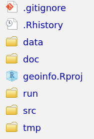
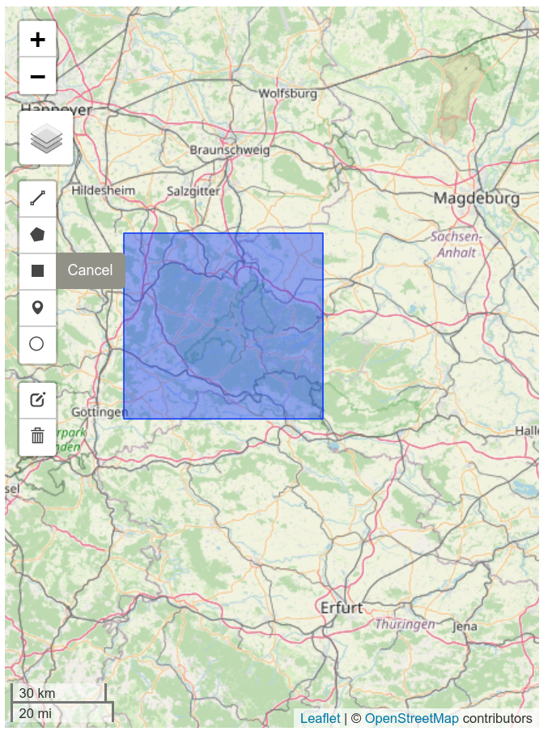

Am Beispiel eines typischen Arbeitsablaufs könne sowohl die frisch erworbenen R-Fertigkeiten gefestigt als auch eine gute Arbeitspraxis eingeübt werden. Die Fragestellung mit der wir uns beschäftigen wollen ist die Erfassung der flächenhaften Verluste von Fichtenwald am Beispiel des Westharzes.
Grundsätzlich können Sie dies bereits mit ihren Basis-Fähigkeiten erfolgreich bearbeiten. Damit Sie sofort mit einer guten Struktur starten treffen wir noch ein paar Vorbereitungen. Zunächst installieren sie bitte das Paket envimaR. Da das Paket auf Github zur Verfügung gestellt wird müssen wir es wie folgt
installieren:
# first install the utility package devtools
install.packages("devtools)
# Install envimaR
devtools::install_github("envima/envimaR")Wir benötigen dieses Paket um bequem eine definierte Areitsumgebung zu erzeugen.
Nach der Installation navigieren Sie zu File->New Project->New Directory. Dann scrollen Sie nach unten bis zur Auswahl Project structure with envimaR. Diese wählen Sie aus. Navigieren sie zu einem Verzeichnis ihrer Wahl. Geben sie einen Projektnamen ein z.B. geoinfo. Das Projekt wird im angegebenen Ordner geöffnet und sollte im Reiter Files so aussehen:

Doppelklicken Sie auf das Verzeichnissrc und dann den Unterordner functions. Hier öffnen Sie die Datei 000_setup.R durch Doppelklick. Ersetzen Sie den kompletten Inhalt dieser Datei durch den Inhalt des folgenden Scripts:
Dann speichern und schliessen Sie bitte die Datei. Fürs Erste ist damit die Vorbereitung abgeschlossen.
Satellitendaten sind mittlerweile prinzipiell sowohl als Rohdaten als auch in den unterschiedlichsten Produkten leicht zugänglich. Ein Beispiel für eine Satelliten Mission, deren Daten standardmäßig in der Umwelt-Fernerkundung verwendet werden, ist die Sentinel-2-Mission der Europäischen Weltraumorganisation. In R sind diese Daten dank des Pakets sen2r sehr einfach verfügbar.
Um sen2r zu installieren, müssen Sie Rtools installiert haben.
R entsprichtlibrary(devtools) in R ausfind_rtools() aus – wenn TRUE, hat die Installation korrekt funktioniertDann muss das Paket nur noch wie jedes andere Paket installiert werden:
install.packages("sen2r")
library(sen2r)sen2r-GUIDamit Sie Sentinel Daten benutzen können müssen Sie bei SciHub ein Konto anlegen!
Der einfachste Weg, sen2r zu benutzen, ist, die grafische Benutzeroberfläche (GUI) zu öffnen und sie im interaktiven Modus zu benutzen. Allerdings muss man hier in den Einstellungen aus einer Vielzahl von Optionen wählen. Die dafür erforderlichen Kenntnisse sind auch für die unten vorgestellte Kommandozeilenversion notwendig. Beide Schnittstellen können automatisiert werden. Wir empfehlen die API, aber letztlich bleibt es Ihnen überlassen. Verwenden Sie dazu die gleichnamige Funktion.
sen2r::sen2r()Wir eingangs bereits angesprochen planen wir die Veränderung der Waldbedeckung im Harz zu quantifizieren. Nachdem wir die Vorbereitung abgeschlossen haben (Anlegen der Projektumgebung und Einrichten des sen2r Pakets inkl. des Kontos bei Copernicus) kann es nun losgehen.
Was zu tun ist:
sen2r::sen2r() Funktion. Diese lädt dann über die sogenannte API von Copernicus die Daten herunter oder sendet eine email, falls die angeforderten Daten erst aus dem Langzeitspeicher geladen werden müssen.Öffnen Sie die Datei main.R im Ordner src durch Doppelklick. Ersetzen sie den Inhalt des Skriptes durch das das nachfolgnden Skript:
Speichen Sie die main.R
Im diesem Skript werden Sentinel-2-Daten für den Juni 2019 und ein spezielles Gebiet (Area of Interest AOI) heruntergeladen. Zusätzlich wird exemplarisch die Oberflächenalbedo berechnet.
Zu Beginn muss ein Ausschnitt digitalisiert werden. Nutzen Sie hierzu den Befehl harz = mapedit::editMap(). Das Interface ist selbsterklärend und schaut (nachdem sie auf den Harz gezoomed haben und die Karte auf Openstreetmap umgesetellt haben) wie folgt aus:

Klicken sie auf das Viereck und ziehen sie den Ausschnitt für den sie Sentinel Daten suchen. Beenden sie den Vorgang mit Done.
Die sen2r vignette bietet viele hilfreiche Informationen über die Benutzung der GUI und den Zugriff auf die Funktionen von sen2r aus R heraus.
Sie können alle notwendigen Skripte und Daten aus dem github repository
laden
.
Alternativ können sie das Repo auch als Projekt in Rstudio anlegen
Rstudio github
.